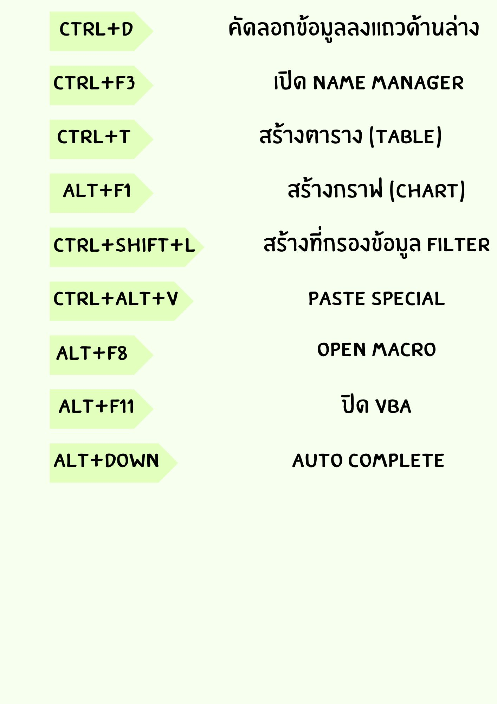
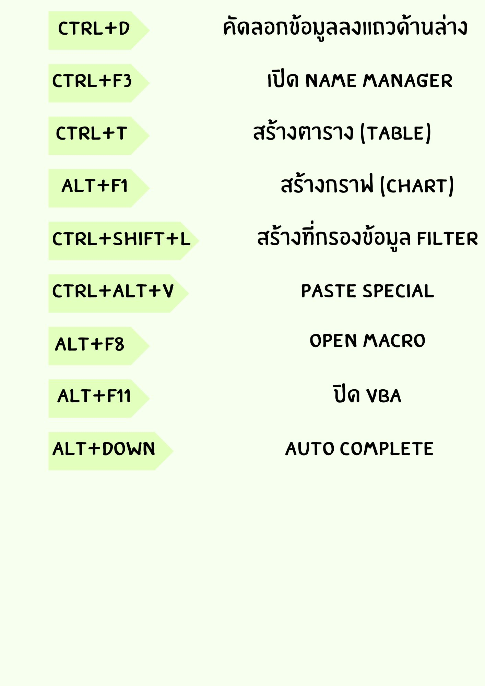

ปุ่มลัดเพื่อการจัดการไฟล์ Excel เบื้องต้น
ปุ่มลัดเพื่อการปรับแต่งข้อมูล หรือ Format Cells
ปุ่มลัดใช้แทนการพิมพ์สูตรและการกดคำสั่งจากเมนูแบบปกติ

ปุ่มลัดเพื่อการจัดการไฟล์ Excel เบื้องต้น |
|||
ปุ่มลัดเพื่อการปรับแต่งข้อมูล หรือ Format Cells |
|||
ปุ่มลัดใช้แทนการพิมพ์สูตรและการกดคำสั่งจากเมนูแบบปกติ |
|||
|
 |
|||
เว็บไซต์นี้จัดทำขึ้นเพื่อเป็นโปรเจคจบของนักเรียนนักศึกษาระดับประกาศนียบัตรวิชาชีพ ชั้นปีที่ 3 แผนกบริหารธุรกิจ สาขา คอมพิวเตอร์ธุรกิจ |
|||